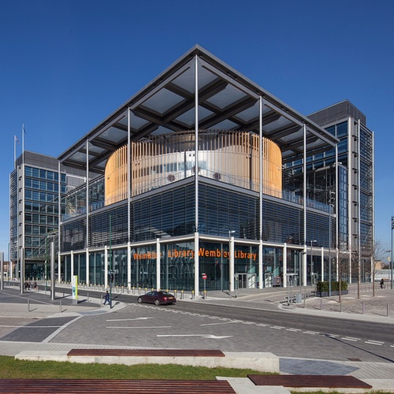
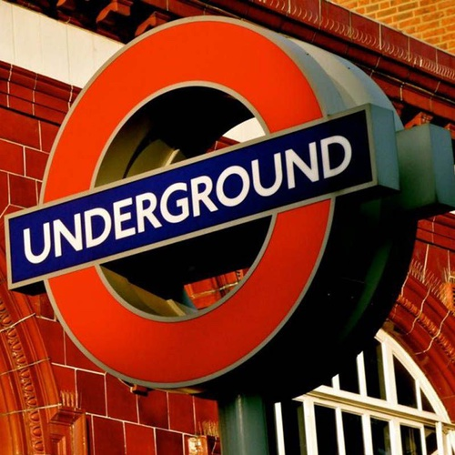
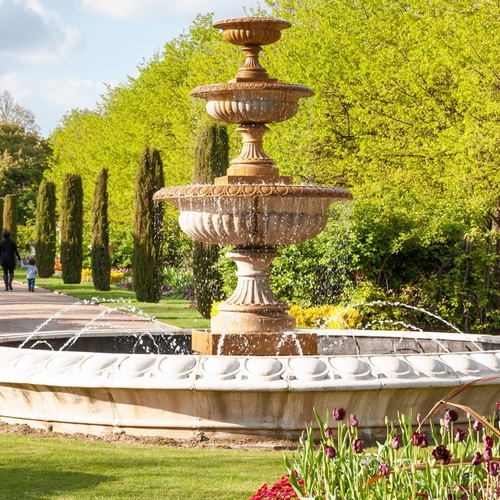
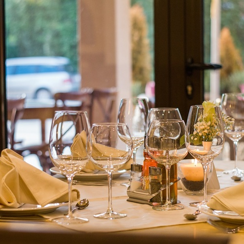

Programme
-

13h45
Cérémonie civile à Brent Civic Centre
Rendez-vous à la mairie de notre quartier pour la cérémonie civile ! Elle durera environ 30 minutes, et sera entièrement en anglais.
-

14h30
Métro
Un mariage à Londres n'est pas complet sans un petit passage dans le métro ! Itinéraire : Metropolitan line de Wembley Park à Baker Street.
-

15h00
Balade et photos à Regent's Park
S'il fait beau (c'est rare mais ça arrive !), nous ferons une balade et des photos de groupe dans un des plus jolis parcs de Londres : Regent's Park.
-

17h00
Réception au Princess of Wales
Le repas et la soirée auront lieu dans un pub anglais, le Princess of Wales, qui sera en partie privatisé. Le pub fermera à minuit.
Transport

Avion
Il y a 6 aéroports à proximité de Londres. A part London City Airport qui est au centre de la ville, ils sont tous très excentrés mais accessibles depuis des trains ou des navettes.
Train
Pour ceux qui aimeraient prendre le train, sachez que l'Eurostar est direct depuis Avignon, Lyon, Paris, Lille et Bruxelles. C'est une option pratique : le train arrive en plein centre de Londres, et il n'y a pas de poids de bagage maximum ou de restriction sur les produits liquides.
Sur place
ne fois sur place, vous devrez acheter une carte Oyster, au guichet ou sur une machine dans n'importe qu'elle station de métro. Cette carte est gratuite mais a une caution de 5£ que vous récupérez en la rendant. Il est possible de charger la carte en "pay as you go", c'est-à-dire que chaque trajet est déduit de la carte, ou prendre une "travelcard" de 3 ou 7 jours, qui vous permet donc de voyager librement pendant 3 ou 7 jours. Pour les travelcards, il faudra choisir les zones de validité. La zone 1 est le centre. La cérémonie aura lieu en zone
Logement
Sélection d'hôtels
Airbnb
Il y a beaucoup d'airbnb à Londres, vous pouvez chercher dans les quartiers de Kings Cross, Camden Town, Marylebone et Paddington pour être proche du centre ville et du lieu du repas. On peut vous aider à choisir si besoin !
Infos pratiques
Obtenir des livres sterling
Le changement de devise en banque n'est rarement rentable, donc on conseille de directement retirer de l'argent sur place ou payer par carte bancaire si vous n'avez pas trop de frais avec votre banque. Une alternative gratuite est de commander une carte prépayée Revolut, et de faire un virement depuis votre compte en banque - vous pourrez alors payer avec cette carte, sans frais de change.
Documents de voyage
Le Brexit n'a pas encore eu lieu, rien n'a donc changé quant à votre capacité à voyager au Royaume-Uni. Vous n'êtes pas obligés d'avoir un passeport, votre carte d'idendité suffit. Mais attention à ce qu'elle soit encore valide au moment du voyage.
Maps
Vous pouvez agrandir la carte et voir notre adresse, l'itinéraire du mariage, les aréroports, ainsi que les lieux de tourisme et shopping - il y a une légende avec code couleur ;)